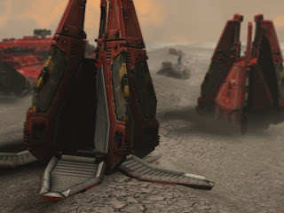

Dude loved water
What? :brow:
For some reason I find the idea of the Citadels being hurled at earth several thousand miles and hour to be most appealing.
When you say that, i think of a ship shitting a citadel out.
Slamming into planetary surface? Reminds me of this:

Funny video. But i still don’t get that “Dude loved water” thing.
Because… he drank a lot of water… so he forgot the past 20 years.
That video is quite good actually. It really explains how the combine want to get rid of the past memories the humans had with the combine. To make them forget they had a war with them so that the humans would trust them more. I think it’s a terrible thing to do.
also, Iron & Wine = win.
I always just imagined they kinda just, dropped it there. As the first shock in the 7 hour war. They opened up a giant superportal, dropped this giant metallic monolith somewhere in Europe, and while everyone was still all freaked out about that, then the synths started attacking.
Wouldn’t the military nuke it as soon as the aliens start popping out of it? The Citadel is big enough to house an atomic explosion without damaging the city… And City 17 should then be destroyed by either the massive earthquake caused by the Citadel falling out of the sky, or the synths popping out of it and shooting everything that moves and anything. Don’t get me wrong, it’s a good theory but I see some flaws in it.
I presume they would put the citadel there AFTER they conquer the earth. The citadel could have been controlled in some way, supporting it with choppers, some sort of gravity control, rockets, balloons. They probably wouldn’t have had synths in the citadel as soon as it arrived. Besides the synths don’t shoot and kill EVERYTHING it sees. For example strider don’t shoot you unless you shoot them.
:facepalm: Please read the quote in my previous post.
:facepalm:
it actually hatched out of a huge egg they say so in one of the commentaries and you can see bits of shell around the base
:what:
I see you trollin’…
Anyway, in Raising the Bar, it says that the Combine detonated a HUGE amount ground into oblivion (creating the huge chasm the Citadel is nested in). After that, they teleported the Citadel itself there.
that makes a bit more sense. where does it say that?
That’s helpful, thanks for that information